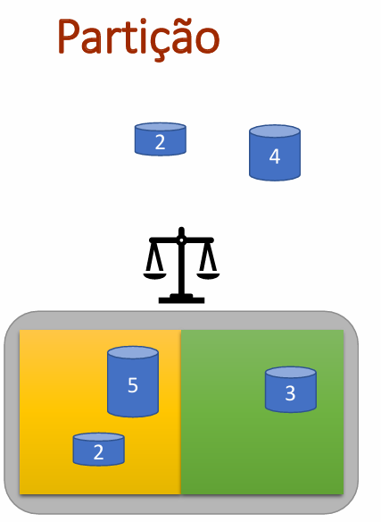

- Generated by
 1.9.8
1.9.8
|
TProcura
Biblioteca em C++ para testes paramétricos de algoritmos, e coleção de algoritmos de procura e otimização
|
Execução de exemplo com base no problema da Partição. Pode acompanhar o teste executando as ações localmente.
No Visual Studio, selecione o projeto TProcuraConstrutiva, e execute. No Linux na pasta .../TProcura/Construtiva/Teste$ execute make seguido de ./bin/Release/TProcuraConstrutiva
Nota: ao executar no terminal, os parâmetros, indicadores e outros elementos, aparecem com realce de cor para facilitar a leitura.
┌─ Teste TProcuraConstrutiva ──┐
│ 1 - Aspirador │
│ 2 - Puzzle 8 │
│ 3 - 8 Damas │
│ 4 - Partição │
└──────────────────────────────┘
Opção: 4

Vamos escolher o problema da partição. Introduza: 4.
Partição ┌─ ⚙ Parâmetros ────────────────────────────────────────────────────── │ P1(ALGORITMO): Largura Primeiro | P2(NIVEL_DEBUG): NADA | P3(SEMENTE): 1 │ P4(LIMITE_TEMPO): 10 | P5(LIMITE_ITERACOES): 0 | P6(VER_ACOES): 4 | P7(LIMITE): 0 │ P8(ESTADOS_REPETIDOS): ignorar | P11(BARALHAR_SUCESSORES): 0 └────────────────────────────────────────────────────────────────────── │ ├─ 📦1192 → ◀️0 = ▶️0 ─ ┌─ ☰ Menu ─────────┬────────────────┬─────────────────────┬──────────────┐ │ 1 📄 Instância │ 2 🔍 Explorar │ 3 ⚙ Parâmetros │ 4 ✔ Solução │ │ 5 ⚖ Indicadores │ 6 ► Executar │ 7 🛠️ Configurações │ 8 🧪 Teste │ └───────────────────┴────────────────┴─────────────────────┴──────────────┘ Opção:
Este problema consiste em dividir os números em duas partes que somem exatamente o mesmo valor. Está no modo compato, vamos colocar no modo extendido para ver o conteúdo da instância. Introduza: 3; 2; 4; ENTER.
... Partição ┌─ ⚙ Parâmetros ────────────────────────────────────────────────────── │ P1(ALGORITMO): Largura Primeiro | P2(NIVEL_DEBUG): COMPLETO | P3(SEMENTE): 1 │ P4(LIMITE_TEMPO): 10 | P5(LIMITE_ITERACOES): 0 | P6(VER_ACOES): 4 | P7(LIMITE): 0 │ P8(ESTADOS_REPETIDOS): ignorar | P11(BARALHAR_SUCESSORES): 0 └────────────────────────────────────────────────────────────────────── │ ┌─ 📦1192 → ◀️0 = ▶️0 ────────────────────────────────────────────────── │ ├─ 📦 ─ 106 107 109 111 114 124 124 124 132 141 │ ├─ ◀️ ─ │ ├─ ▶️ ─ │ └────────────────────────────────────────────────────────────────────── ... Opção:
Podemos agora ver os números a colocar. Somam no total 1192, e tem que se colocar cada número numa das linhas. A soma em cada linha tem de ser igual.
Vamos ver as instâncias que temos. Introduza: 1; 10.
Opção: 1 ┌─ 📄 Instância ─────────────────────────────────────────────────────── │ ID atual: 10 Intervalo: [2–1000] │ Prefixo atual: 'instancia_' └────────────────────────────────────────────────────────────────────── Novo ID (ENTER mantém) ou novo prefixo (texto): 10
Existem instâncias de 2 a 1000, correspondendo o ID à quantidade de números. As instâncias são geradas aleatoriamente, podendo existir instâncias impossíveis.
Deixemos a instância 10 para resolução manual.
Vamos procurar resolver manualmente a intância. Introduza: 2; esq dir esq dir; dir esq dir esq; esq; dir; esq.
Opção: 2 ═╤═ 💰 g:0 ⚖ 1|2|3 ═══ │ ┌─ 📦1192 → ◀️0 = ▶️0 ────────────────────────────────────────────────── │ ├─ 📦 ─ 106 107 109 111 114 124 124 124 132 141 │ ├─ ◀️ ─ │ ├─ ▶️ ─ │ └────────────────────────────────────────────────────────────────────── │ └─ ⚡ ──── esq dir { 🔖 1 🔖 2 } 🔍 Sucessor [1-2, ação(ões), exe]: esq dir esq dir ┌─ ✔ ──────────────── │ Executadas 4 ações. └───────────────────── ═╤═ 💰 g:0 ⚖ 6|12|6 ═══ │ ┌─ 📦671 → ◀️265 = ▶️256 ─────────────────────────────────────────────── │ ├─ 📦 ─ 106 107 109 111 114 124 │ ├─ ◀️ ─ 141 124 │ ├─ ▶️ ─ 132 124 │ └────────────────────────────────────────────────────────────────────── │ └─ ⚡ ──── esq dir { 🔖 11 🔖 12 } 🔍 Sucessor [1-2, ação(ões), exe]: dir esq dir esq ┌─ ✔ ──────────────── │ Executadas 4 ações. └───────────────────── ═╤═ 💰 g:0 ⚖ 11|22|9 ═══ │ ┌─ 📦213 → ◀️488 = ▶️491 ─────────────────────────────────────────────── │ ├─ 📦 ─ 106 107 │ ├─ ◀️ ─ 141 124 114 109 │ ├─ ▶️ ─ 132 124 124 111 │ └────────────────────────────────────────────────────────────────────── │ └─ ⚡ ──── esq dir { 🔖 21 🔖 22 } 🔍 Sucessor [1-2, ação(ões), exe]: esq ┌─ ✔ ──────────────── │ Executadas 1 ações. └───────────────────── ═╤═ 💰 g:0 ⚖ 13|26|12 ═══ │ ┌─ 📦106 → ◀️595 = ▶️491 ─────────────────────────────────────────────── │ ├─ 📦 ─ 106 │ ├─ ◀️ ─ 141 124 114 109 107 │ ├─ ▶️ ─ 132 124 124 111 │ └────────────────────────────────────────────────────────────────────── │ └─ ⚡ ──── esq dir { 🔖 25 🔖 26 } 🔍 Sucessor [1-2, ação(ões), exe]: dir ┌─ ✔ ──────────────── │ Executadas 1 ações. └───────────────────── ═╤═ 💰 g:0 ⚖ 15|28|13 ═══ │ ┌─ 📦0 → ◀️595 = ▶️597 ───────────────────────────────────────────────── │ ├─ 📦 ─ │ ├─ ◀️ ─ 141 124 114 109 107 │ ├─ ▶️ ─ 132 124 124 111 106 │ └────────────────────────────────────────────────────────────────────── │ └─ ⚡ ──── ┌─ ⛔ ─────────────── │ Sem sucessores. └──────────────────── Partição ... │ ┌─ 📦0 → ◀️595 = ▶️597 ───────────────────────────────────────────────── │ ├─ 📦 ─ │ ├─ ◀️ ─ 141 124 114 109 107 │ ├─ ▶️ ─ 132 124 124 111 106 │ └────────────────────────────────────────────────────────────────────── ... Opção:
Foi uma boa tentativa, mas no final um lado soma 595 do outro 597.
Tal como as 8 damas, o número de ações de uma solução completa é fixo. É igual à quantidade de número a colocar. Sabemos que não faz sentido a procura em largura nestes problemas. Também pelos mesmos motivos que nas 8 damas, não se consegue uma heurística pelo que não faz sentido as procuras informadas.
Naturalmente que se poderia efetuar mais cortes dos que estão a ser feitos nesta implementação. Vamos apenas comparar a remoção de repetidos gerados, relativamente a ignorar repetidos, e também os sucessores aleatórios, tal como no problema das 8 damas.
No caso da partição, após um número estar num lado, apenas a soma interessa. Como se coloca os números por ordem, um estado fica igual a todos os que têm o montante igual das peças colocadas. Esquerda e direita é naturalmente irrelevante.
Como o estado codificado fica pequeno, a expectativa para ganho por repetidos aumenta, face às 8 damas em que se tinham de considerar 3 simetrias, levando a um tempo computacional superior.
Vamos fazer testes empíricos na linha de comandos.
Vamos obter primeiramente a lista de todos os parâmetros.
/TProcura/Construtiva/Teste$ ./bin/Release/TProcuraConstrutiva -h ┌─ Teste TProcuraConstrutiva ──┐ │ 1 - Aspirador │ │ 2 - Puzzle 8 │ │ 3 - 8 Damas │ │ 4 - Partição │ │ 5 - Artificial │ └──────────────────────────────┘ Opção: 4 Uso: ./bin/Release/TProcuraConstrutiva[opções] Conjunto de IDs: A | A,B,C | A:B[:C] Opções: -R Nome do CSV de resultados (omissão: resultados.csv) -F Prefixo dos ficheiros de instância (omissão: instancia_) -M Modo MPI: 0 = divisão estática, 1 = gestor-trabalhador -I Lista de indicadores (e.g. 2,1,3) -h Esta ajuda -P Parâmetros (e.g. P1=1:3 x P2=0:2) - último campo Exemplo: ./bin/Release/TProcuraConstrutiva 1:5 -R out -F fich_ -I 3,1,4,2 -P P1=1:5 x P6=1,2 Executar sem argumentos entra em modo interativo, para explorar todos os parâmetros e indicadores ┌─ ⚙ Parâmetros ────────────────────────────────────────────────────── │ P1(ALGORITMO): Largura Primeiro (1 a 7) │ P2(NIVEL_DEBUG): NADA (0 a 4) │ P3(SEMENTE): 1 (1 a 1000000) │ P4(LIMITE_TEMPO): 10 (1 a 3600) │ P5(LIMITE_ITERACOES): 0 (0 a 1000000000) │ P6(VER_ACOES): 4 (1 a 100) │ P7(LIMITE): 0 (-1 a 1000000) │ P8(ESTADOS_REPETIDOS): ignorar (1 a 3) │ P11(BARALHAR_SUCESSORES): 0 (0 a 1) └────────────────────────────────────────────────────────────────────── ┌─ ⚖ Indicadores ───────────────────────────────────────────────────── │ I1(IND_CUSTO): ✓ 1º lugar │ o resultado é o custo da solução atual │ I2(Tempo(ms)): ✓ 2º lugar │ Tempo em milissegundos da execução (medida de esforço computacional). │ I3(Iterações): ✓ 3º lugar │ Iterações do algoritmo, interpretadas conforme o algoritmo (medida de esforço independente do hardware). │ I4(IND_EXPANSOES): ✓ 4º lugar │ número de expansões efetuadas │ I5(IND_GERACOES): ✓ 5º lugar │ número de estados gerados │ I6(IND_LOWER_BOUND): ✓ 6º lugar │ valor mínimo para a melhor solução, se igual ao custo da solução obtida, então esta é ótima └──────────────────────────────────────────────────────────────────────
O primeiro ponto a testar é a geração de repetidos. Temos muitas instâncias de diferentes tamanhos. Como as instâncias sobem de tamanho com o ID, utilizamos apenas até à instância 200, de 20 em 20, e de cada tamanho aumentamos o esforço com diferentes números de instâncias.
Como temos 20 tarefas, utilizamos o debug completo.
Opção: 4
═╤═ Instâncias ═══ { 📄 2 📄 22 📄 42 📄 62 📄 82 📄 102 📄 122 📄 142 📄 162 📄 182 }
├─ 🛠️ ─ P1=3 P2=4 P3=1 P4=10 P5=0 P6=4 P7=-1 P11=0 (parâmetros comuns)
═╪═ Configurações ═══
├─ ⚙ [1] ─ P8=1
├─ ⚙ [2] ─ P8=3
═╧═══════════════════
═╤═ 🧪 Início do Teste (🖥️ 0) ═══
├─ 📋 Tarefas:20 📄 Instâncias: 10 🛠️ Configurações: 2 🖥️ Processos: 1.
├─ ⏱ 📋 1 📄 2 🛠️ 1 🖥️ 1 🎯 ⛔ ⚖ -1 0 0 3 2 0
├─ ⏱ 📋 2 📄 22 🛠️ 1 🖥️ 1 🎯 22 ⚖ 22 36 0 77893 77904 0
├─ ⏱ 37ms 📋 3 📄 42 🛠️ 1 🖥️ 1 🚫 ⏱ ⚖ -2 10000 0 24036915 24036934 0
├─ ⏱ 10" 37ms 📋 4 📄 62 🛠️ 1 🖥️ 1 🚫 ⏱ ⚖ -2 10000 0 22859567 22859598 0
├─ ⏱ 20" 37ms 📋 5 📄 82 🛠️ 1 🖥️ 1 🚫 ⏱ ⚖ -2 10000 0 20615188 20615228 0
├─ ⏱ 30" 37ms 📋 6 📄 102 🛠️ 1 🖥️ 1 🚫 ⏱ ⚖ -2 10000 0 20034739 20034788 0
├─ ⏱ 40" 37ms 📋 7 📄 122 🛠️ 1 🖥️ 1 🚫 ⏱ ⚖ -2 10000 0 19117816 19117876 0
├─ ⏱ 50" 37ms 📋 8 📄 142 🛠️ 1 🖥️ 1 🚫 ⏱ ⚖ -2 10000 0 19118189 19118260 0
├─ ⏱ 1' 37ms 📋 9 📄 162 🛠️ 1 🖥️ 1 🚫 ⏱ ⚖ -2 10000 0 18281362 18281440 0
├─ ⏱ 1' 10" 37ms 📋 10 📄 182 🛠️ 1 🖥️ 1 🚫 ⏱ ⚖ -2 10000 0 17633077 17633166 0
├─ ⏱ 1' 20" 38ms 📋 11 📄 2 🛠️ 2 🖥️ 1 🎯 ⛔ ⚖ -1 60 0 2 1 0
├─ ⏱ 1' 20" 97ms 📋 12 📄 22 🛠️ 2 🖥️ 1 🎯 22 ⚖ 22 14 0 4189 4199 0
├─ ⏱ 1' 20" 111ms 📋 13 📄 42 🛠️ 2 🖥️ 1 🎯 42 ⚖ 42 56 0 51162 51182 0
├─ ⏱ 1' 20" 167ms 📋 14 📄 62 🛠️ 2 🖥️ 1 🎯 62 ⚖ 62 191 0 230596 230626 0
├─ ⏱ 1' 20" 358ms 📋 15 📄 82 🛠️ 2 🖥️ 1 🎯 82 ⚖ 82 670 0 732439 732479 0
├─ ⏱ 1' 21" 28ms 📋 16 📄 102 🛠️ 2 🖥️ 1 🎯 102 ⚖ 102 3652 0 4053100 4053150 0
├─ ⏱ 1' 24" 680ms 📋 17 📄 122 🛠️ 2 🖥️ 1 🚫 ⏱ ⚖ -2 10005 0 10992167 10992215 0
├─ ⏱ 1' 34" 685ms 📋 18 📄 142 🛠️ 2 🖥️ 1 🚫 ⏱ ⚖ -2 10004 0 10864256 10864314 0
├─ ⏱ 1' 44" 690ms 📋 19 📄 162 🛠️ 2 🖥️ 1 🚫 ⏱ ⚖ -2 10004 0 10825532 10825603 0
├─ ⏱ 1' 54" 694ms 📋 20 📄 182 🛠️ 2 🖥️ 1 🚫 ⏱ ⚖ -2 10004 0 10665339 10665421 0
├─ 📑 Ficheiro Resultados/particao_1.csv gravado.
│ ⏱ Tempo real: 2' 4" 698ms
│ ⏱ CPU total: 2' 4" 698ms
│ 📊 Utilização: 100.0%
═╧═ 🏁 Fim do Teste (🖥️ 0 ⏱ 2' 4" 698ms ) ═══
Como podemos ver dos logs, a configuração 2 resolve mais instâncias, mas não resolveu a partir da instância 122.
Vamos ver os resultados:
Podemos ver a tabela resultante:
| Rótulos de Linha | 1:ignorar | 3:gerados |
|---|---|---|
| 2 | 0 | 60 |
| 22 | 36 | 14 |
| 42 | 10000 | 56 |
| 62 | 10000 | 191 |
| 82 | 10000 | 670 |
| 102 | 10000 | 3652 |
| 122 | 10000 | 10005 |
| 142 | 10000 | 10004 |
| 162 | 10000 | 10004 |
| 182 | 10000 | 10004 |
| Total Geral | 80036 | 44660 |
Confirma-se que os estados gerados, é neste caso bastante compensador. Naturalmente que há apenas uma execução para cada dimensão, mas a execução de maior esforço neste teste, e utilização de intervalos de confiança, permitirá concluir com suporte estatístico que de facto é preferivel utilizar-se a eliminação de estados gerados. Num caso instâncias são resolvidas até 20, mas não com 40 elementos, enquanto que com eliminação de estados gerados resolvem-se instâncias até 102.
Prosseguimos agora para o teste da ordem aleatória de sucessores. Como sabemos que as instâncias são resolvida até 100, vamos desta vez utilizar as instâncias de 2 a 100, para melhor observar se há ou não vantagem em ter os sucessores aleatórios. Como temos ordens aleatórias, vamos manter um P3 mínimo com 4 aleatórios gerados.
São mais tarefas, pelo que utilizamos o debug 3.
Opção: 4
═╤═ Instâncias ═══ { 📄 2 📄 12 📄 22 📄 32 📄 42 📄 52 📄 62 📄 72 📄 82 📄 92 }
├─ 🛠️ ─ P1=3 P2=3 P4=10 P5=0 P6=4 P7=-1 P8=3 (parâmetros comuns)
═╪═ Configurações ═══
├─ ⚙ [1] ─ P3=1 P11=0
├─ ⚙ [2] ─ P3=2 P11=0
├─ ⚙ [3] ─ P3=3 P11=0
├─ ⚙ [4] ─ P3=4 P11=0
├─ ⚙ [5] ─ P3=1 P11=1
├─ ⚙ [6] ─ P3=2 P11=1
├─ ⚙ [7] ─ P3=3 P11=1
├─ ⚙ [8] ─ P3=4 P11=1
═╧═══════════════════
═╤═ 🧪 Início do Teste (🖥️ 0) ═══
├─ 📋 Tarefas:80 📄 Instâncias: 10 🛠️ Configurações: 8 🖥️ Processos: 1.
├─ ⏱ 10" 339ms 📋 41 📄 2 🛠️ 5 🖥️ 1
├─ 📑 Ficheiro Resultados/particao_2.csv gravado.
│ ⏱ Tempo real: 11" 272ms
│ ⏱ CPU total: 11" 272ms
│ 📊 Utilização: 100.0%
═╧═ 🏁 Fim do Teste (🖥️ 0 ⏱ 11" 272ms ) ═══
Vamos ver os resultados:
Podemos ver a tabela resultante:
| Rótulos de Linha | 0 | 1 |
|---|---|---|
| 2 | 16,75 | 7 |
| 12 | 7,5 | 7 |
| 22 | 9,75 | 7,5 |
| 32 | 18,75 | 8,25 |
| 42 | 50,25 | 25,25 |
| 52 | 104 | 26,5 |
| 62 | 187,5 | 16,25 |
| 72 | 363 | 54,75 |
| 82 | 640 | 34,5 |
| 92 | 1186,75 | 46,75 |
| Total Geral | 258,425 | 23,375 |
Toda as instâncias foram resolvidas, e surpresa ou não, a ordem aleatória é superior em média à ordem fixa, sendo a média de tempo na instância 92 apenas 46 milissegundos, contra mais de 1 segundo na ordem fixa.
Pretendemos agora fazer um teste de performance para a melhor configuração, de modo a saber até que instância consegue resolver e com que tempo. Vamos colocar no esforço não apenas o número de 4 execuções para cada dimensão inicial, mas mudando para 40 nos esforços B e C de modo a ganhar precisão estatística, e também o número de instâncias.
Opção: 4
═╤═ Instâncias ═══ { 📄 2 📄 102 📄 202 📄 302 📄 402 📄 502 📄 602 📄 702 📄 802 📄 902 }
├─ 🛠️ ─ P1=3 P2=3 P4=10 P5=0 P6=4 P7=-1 P8=3 P11=1 (parâmetros comuns)
═╪═ Configurações ═══
├─ ⚙ [1] ─ P3=1
├─ ⚙ [2] ─ P3=2
├─ ⚙ [3] ─ P3=3
├─ ⚙ [4] ─ P3=4
═╧═══════════════════
═╤═ 🧪 Início do Teste (🖥️ 0) ═══
├─ 📋 Tarefas:40 📄 Instâncias: 10 🛠️ Configurações: 4 🖥️ Processos: 1.
├─ ⏱ 10" 141ms 📋 5 📄 402 🛠️ 1 🖥️ 1
├─ ⏱ 20" 193ms 📋 7 📄 602 🛠️ 1 🖥️ 1
├─ ⏱ 30" 201ms 📋 8 📄 702 🛠️ 1 🖥️ 1
├─ ⏱ 40" 206ms 📋 9 📄 802 🛠️ 1 🖥️ 1
├─ ⏱ 50" 211ms 📋 10 📄 902 🛠️ 1 🖥️ 1
├─ ⏱ 1' 217ms 📋 11 📄 2 🛠️ 2 🖥️ 1
├─ ⏱ 1' 11" 354ms 📋 15 📄 402 🛠️ 2 🖥️ 1
├─ ⏱ 1' 21" 359ms 📋 16 📄 502 🛠️ 2 🖥️ 1
├─ ⏱ 1' 31" 627ms 📋 19 📄 802 🛠️ 2 🖥️ 1
├─ ⏱ 1' 41" 633ms 📋 20 📄 902 🛠️ 2 🖥️ 1
├─ ⏱ 1' 51" 639ms 📋 21 📄 2 🛠️ 3 🖥️ 1
├─ ⏱ 2' 1" 805ms 📋 24 📄 302 🛠️ 3 🖥️ 1
├─ ⏱ 2' 12" 309ms 📋 27 📄 602 🛠️ 3 🖥️ 1
├─ ⏱ 2' 22" 314ms 📋 28 📄 702 🛠️ 3 🖥️ 1
├─ ⏱ 2' 32" 320ms 📋 29 📄 802 🛠️ 3 🖥️ 1
├─ ⏱ 2' 42" 325ms 📋 30 📄 902 🛠️ 3 🖥️ 1
├─ ⏱ 2' 52" 331ms 📋 31 📄 2 🛠️ 4 🖥️ 1
├─ ⏱ 3' 2" 675ms 📋 35 📄 402 🛠️ 4 🖥️ 1
├─ ⏱ 3' 12" 680ms 📋 36 📄 502 🛠️ 4 🖥️ 1
├─ ⏱ 3' 22" 685ms 📋 37 📄 602 🛠️ 4 🖥️ 1
├─ ⏱ 3' 32" 690ms 📋 38 📄 702 🛠️ 4 🖥️ 1
├─ ⏱ 3' 42" 696ms 📋 39 📄 802 🛠️ 4 🖥️ 1
├─ ⏱ 3' 52" 702ms 📋 40 📄 902 🛠️ 4 🖥️ 1
├─ 📑 Ficheiro Resultados/particao_3.csv gravado.
│ ⏱ Tempo real: 4' 2" 708ms
│ ⏱ CPU total: 4' 2" 708ms
│ 📊 Utilização: 100.0%
═╧═ 🏁 Fim do Teste (🖥️ 0 ⏱ 4' 2" 708ms ) ═══
Vamos ver os resultados:
| Rótulos de Linha | Média de Resolvido | Mínimo de I2(Tempo(ms)) | Média de I2(Tempo(ms)) | Máximo de I2(Tempo(ms)) |
|---|---|---|---|---|
| 2 | 1 | 7 | 21 | 62 |
| 102 | 1 | 35 | 130,75 | 277 |
| 202 | 0,75 | 14 | 2790,75 | 10004 |
| 302 | 0,25 | 166 | 7546 | 10008 |
| 402 | 0,5 | 47 | 5097,5 | 10005 |
| 502 | 0,25 | 9 | 7506 | 10005 |
| 602 | 0,25 | 253 | 7567,75 | 10008 |
| 702 | 0 | 10005 | 10005 | 10005 |
| 802 | 0 | 10005 | 10005,25 | 10006 |
| 902 | 0 | 10005 | 10005,5 | 10006 |
Podemos ver que apenas as instâncias até 100 é que são todas resolvidas, e instâncias de 700 ou mais não são resolvidas, dentro do limite de 10 segundos. Naturalmente que para maior precisão na percentagem, é necessário um maior esforço no teste.
Podemos considerar portanto que as instâncias geradas de 700 a 1000 são desafiantes para esta implementação.
Note-se no entanto que o gerador de instâncias não é um conjunto de números aleatórios puro. Essas instâncias são normalmente simples. O gerador foi construído para procurar instâncias complexas para um dado tamanho, pelo que esta tabela não representa uma instância arbitrária da partição, nem os resultados são generalizáveis a qualquer instância.
Uma instância completamente aleatória é muito simples de resolver. Na investigação as instâncias complexas deste problema têm de ter inteiros muito grandes, tendo de serem utilizadas representações de inteiros maiores que 64 bits para guardar e somar números desses tamanhos.